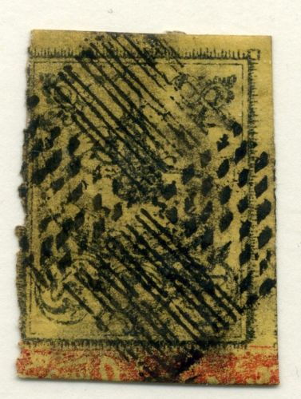
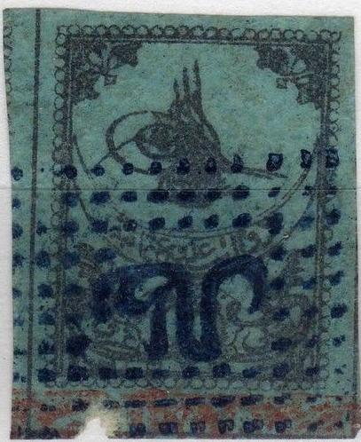
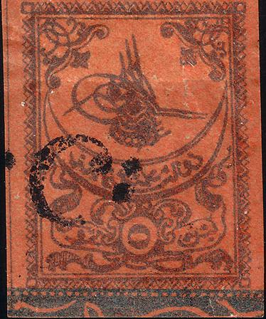
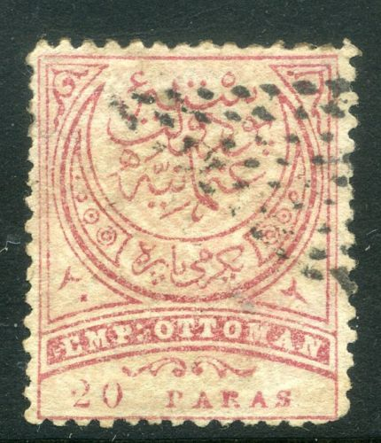

{kind=link}

Türkei - Turquie
Return To Catalogue - Turkey overview
Note: on my website many of the
pictures can not be seen! They are of course present in the
catalogue;
contact me if you want to purchase the catalogue.
The first cancels to be used on stamps of Turkey are the above stripes and dots cancels. They consist of four squares filled up with lines (upper left and lower right) and dots (upper right and lower left). These cancels were used in 1863 and 1864. Three varieties exist differing in the size (25 x 19 mm, 26 x 20 mm and 26 x 18 mm).

('Battal' cancels)
A second cancel used on these stamps is the 'Battal' cancel (which means 'cancelled'), the word 'Battal' is written in arabic (looks like some kind of 'M'), surrounded by a rectangular pattern of dots. Eight different types exist (also mainly differing in size): 25 x 20 mm (2 types, text and dots slightly different), 27 x 19 mm, 26 x 18 mm, 25 x 18 mm (3 types with text slightly different) and 26 x 19 mm.



Another forgery set, note the cancel 'C' with two dots. Also note
the value inscriptions, notably the '20' and '2' (both in Arabic)
in the 20 paras and 2 Pi which are different from the genuine
stamps. The '5' (in Arabic) is also different on the 5 Pi.
Cancel consisting of three rectangles, city name in the centre in Arabic with the year '81' in Arabic below it. The next sheet apparently shows all cancels of this type:

Forged stamps with forged cancels (in my view always without any
cityname in the center)
Forged cancels made by Fournier; the first one of the town of
'San'. The cancels were taken from 'The Fournier Album of
Philatelic Forgeries'.
Similar cancels exist with two concentric circles, also with the cityname and the year '81' in Arabic in the center:

Yet another similar cancel consists of a two concentric octogonals with the city name in the center.


Cancel of Chania (Crete) and Kalimnos (Greece)

Hedjaz (Saudi Arabia) cancel.
{kind=link}
{kind=link}
{kind=link}